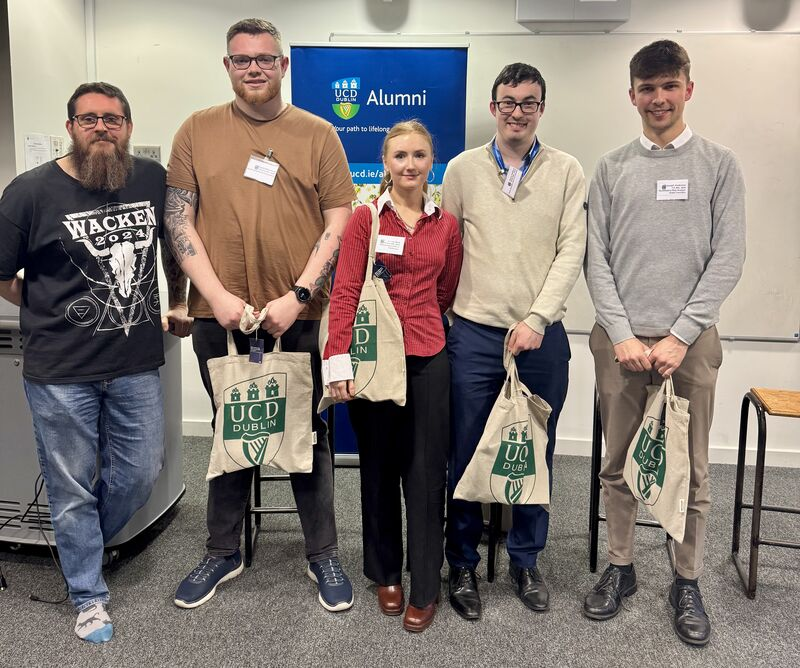

Presentations
This page summarises some of the talks and presentations I have done in the past. They vary from conference presentations to alumni talks. Click the titles for brief summaries. For more detail follow the links to their respective slides.
Click here to view the slides from my presentation.
Brief Description:
I was accepted to present at the 2nd European Fluid Dynamics Conference. This was an opportunity to present the research we conducted as part our paper
on ocean currents. I have detailed the research I presented in Research. The conference had
over 800 fluid dynamics experts in attendance. I had some interesting discussions throughout the four day conference and it was great being able to dive further
into other areas of fluid dynamics that I am not experienced in.

Fig. 1: My opening slide of the presentation.
Brief Description:
In March 2025, I returned to UCD as part of an alumni careers panel in the School of Physics. We gave advice on all things related to careers and post university life.

Fig. 2: Pictured taken in UCD following our alumni careers talk with current physics students in UCD.
Click here to view my presentation slides.
Brief Description:
My final year thesis involved a presentation to the Department of Physics in UCD. I discussed the research I had conducted over the previous 9 months.
Skills: Python, MatLab, big data, statistical methods.
Get in touch at josephanderson7180@gmail.com